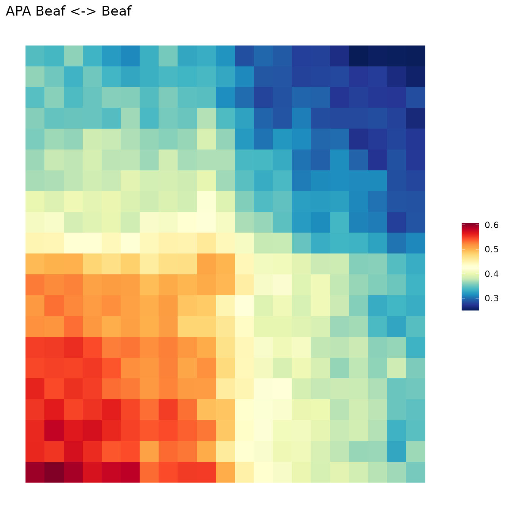

Genomic2DTK - Quick start
Nicolas Chanard
2022-11-30
Source:vignettes/Genomic2DTK.Rmd
Genomic2DTK.RmdLibrary
Genomic2DTK is a package that allows to perform aggregation analyses. In a first step, these analyses consist in extracting 3D conformation data at specific genome loci. Then, in a second step, to aggregate the extracted signal on all the loci to visualize it. In this tutorial you will see how to quickly perform this type of analysis. However, we invite you to have a closer look at the documentation and other articles that present in more depth the possibilities of Genomic2DTK which allows for example the exploration and quantification of the signal at a single locus or the performance of differential analysis.
Test dataset
The testing dataset is obtained from Drosophila melanogaster S2 cells. A first part of this data is provided directly in this package and it consist of genomic location data (ChIP-seq and annotations). An other part of testing dataset is downloaded directly from the 4DN platform and it consists of 3D structure data of the genome (HiC maps in two different conditions).
Genomic location and annotation data
Subset of ChIP-seq peaks of Beaf-32 protein in wild type condition in GRanges format (bed). These kind of data could be import in R with rtracklayer package.
data("Beaf32_Peaks.gnr")View
| seq | start | end | strand | name | score |
|---|---|---|---|---|---|
| 2L | 35594 | 35725 | * | Beaf32_2 | 76 |
| 2L | 47296 | 47470 | * | Beaf32_3 | 44 |
| 2L | 65770 | 65971 | * | Beaf32_5 | 520 |
Genomic 3D structure
The second part of the test data is downloaded directly from the 4DN platform. It consists of data from HiC experiments in .hic format (juicer format).
options(timeout = 3600)
temp.dir <- file.path(tempdir(), "HIC_DATA")
dir.create(temp.dir)
Hic.url <- "https://4dn-open-data-public.s3.amazonaws.com/fourfront-webprod/wfoutput/7386f953-8da9-47b0-acb2-931cba810544/4DNFIOTPSS3L.hic"
HicOutput.pth <- file.path(temp.dir, "Control_HIC.hic")
download.file(Hic.url, HicOutput.pth, method = 'curl', extra = '-k')Additional genome informations
General genomic informations used by the functions all along the process are a data.frame containing chromosomes names and sized and the binSize, corresponding to the HiC matrices resolution. We complete the data with 2L and 2R chromosome sizes and HiC map resolution.
seqlengths.num <- c('2L'=23513712, '2R'=25286936)
chromSize.dtf <- data.frame(
seqnames = names(seqlengths.num ),
seqlengths = seqlengths.num
)
binSize.num <- 1000HiC Preprocess
The package supports the preprocessing of HiC data and allows you to access the information in a simplified way thanks to the data structure.
Balancing
Genomic2TK forces the import in the R environment of the raw counts matrix, it is thus necessary to perform the balancing step (Defaut: Iterative Correction) which makes it possible to correct the biases inherent to the loci by balancing the sums of each line and of each column to make them comparable.
hic.cmx_lst <- NormalizeHiC(hic.cmx_lst)Expected
Once the bias inherent to the loci has been corrected, the bias due to the genomic distance between two loci must be corrected. To do this, the matrix is corrected by the expected values for each genomic distance.
hic.cmx_lst <- ExpectedHiC(hic.cmx_lst)HiC data format: ContactMatrix list (cmx_lst) structure
Each element of the list corresponds to a ContactMatrix object
(dgCMatrix object, sparse matrix format) storing contact frequencies for
one chromosomes (cis-interactions, ex: “2L_2L”) or between two
chromosomes (trans-interactions, ex: “2L_2R”).
HiC data format is based on InteractionSet
package, for more details on sparse matrices format, see Matrix.
str(hic.cmx_lst, max.level = 3, give.attr = FALSE)
#> List of 2
#> $ 2L_2L:Formal class 'ContactMatrix' [package "InteractionSet"] with 5 slots
#> .. ..@ matrix :Formal class 'dgCMatrix' [package "Matrix"] with 6 slots
#> .. ..@ anchor1 : int [1:23514] 1 2 3 4 5 6 7 8 9 10 ...
#> .. ..@ anchor2 : int [1:23514] 1 2 3 4 5 6 7 8 9 10 ...
#> .. ..@ regions :Formal class 'GRanges' [package "GenomicRanges"] with 7 slots
#> .. ..@ metadata:List of 10
#> $ 2R_2R:Formal class 'ContactMatrix' [package "InteractionSet"] with 5 slots
#> .. ..@ matrix :Formal class 'dgCMatrix' [package "Matrix"] with 6 slots
#> .. ..@ anchor1 : int [1:25287] 1 2 3 4 5 6 7 8 9 10 ...
#> .. ..@ anchor2 : int [1:25287] 1 2 3 4 5 6 7 8 9 10 ...
#> .. ..@ regions :Formal class 'GRanges' [package "GenomicRanges"] with 7 slots
#> .. ..@ metadata:List of 10
#>The list object have some generals attributes. These attributes are accessed via:
str(attributes(hic.cmx_lst))
#> List of 6
#> $ names : chr [1:2] "2L_2L" "2R_2R"
#> $ resolution : num 1000
#> $ chromSize : tibble [2 × 3] (S3: tbl_df/tbl/data.frame)
#> ..$ name : chr [1:2] "2L" "2R"
#> ..$ length : num [1:2] 23513712 25286936
#> ..$ dimension: num [1:2] 23514 25287
#> $ matricesKind: tibble [2 × 4] (S3: tbl_df/tbl/data.frame)
#> ..$ name : chr [1:2] "2L_2L" "2R_2R"
#> ..$ type : chr [1:2] "cis" "cis"
#> ..$ kind : chr [1:2] "U" "U"
#> ..$ symmetric: logi [1:2] TRUE TRUE
#> $ mtx : chr "o/e"
#> $ expected : tibble [24,362 × 2] (S3: tbl_df/tbl/data.frame)
#> ..$ distance: num [1:24362] 1 1001 2001 3001 4001 ...
#> ..$ expected: num [1:24362] 52.3 68.7 42.8 35.5 30.4 ...
#>- names : the names of list elements (ContactMatrix).
-
resolution : the resolution of the HiC map.
-
chromSize : the size of the chromosomes in the
tibble format.
-
seqnames : the sequence name (chromosome name).
-
seqlengths : the sequence length in base pairs.
-
dimension : the sequence length in base bins
-
seqnames : the sequence name (chromosome name).
-
matricesKind : the kind of matrix that composes the
list in the tibble format.
- name : the matrix name.
-
type : interaction type. “Cis” for interactions on
the same chromosome and “Trans” for interactions on different
chromosomes.
- kind : the matrix kind. U for upper triangle matrices, L for lower triangle matrices, NA for rectangular or square matrices.
-
symmetric : a boolean that indicates whether the matrix is
symmetric (lower triangle identical to upper triangle).
- mtx : the kind of values in matrix. For exemple observed counts, normalized counts, observed/expected, etc.
- expected : a tiblle of expected count as a function of genomic distance
Each contactmatrix in the list have metadata. These are accessed via:
str(S4Vectors::metadata(hic.cmx_lst[["2L_2L"]]))
#> List of 10
#> $ name : chr "2L_2L"
#> $ type : chr "cis"
#> $ kind : chr "U"
#> $ symmetric : logi TRUE
#> $ resolution : num 1000
#> $ removedCounts:Formal class 'dgCMatrix' [package "Matrix"] with 6 slots
#> .. ..@ i : int [1:67995] 5 7 8 9 11 11 11 11 17 28 ...
#> .. ..@ p : int [1:23515] 0 0 0 0 0 0 0 0 0 0 ...
#> .. ..@ Dim : int [1:2] 23514 23514
#> .. ..@ Dimnames:List of 2
#> .. .. ..$ : NULL
#> .. .. ..$ : NULL
#> .. ..@ x : num [1:67995] 1 2 3 1 2 3 3 1 1 1 ...
#> .. ..@ factors : list()
#> $ observed : num [1:6540004] 41 126 34 60 90 32 77 89 74 87 ...
#> $ normalizer : num [1:6540004] 1.085 0.971 0.869 1.345 1.203 ...
#> $ mtx : chr "norm"
#> $ expected : num [1:6540004] 52 65.8 52 39.8 65.8 ...
#>- name : the name of the ContactMatrix.
- type : interaction type. “Cis” for interactions on the same chromosome and “Trans” for interactions on different chromosomes.
- kind : the matrix kind. U for upper triangle matrices, L for lower triangle matrices, NA for rectangular or square
-
symmetric : a boolean that indicates whether the
matrix is symmetric (lower triangle identical to upper triangle).
-
resolution : the resolution of the HiC map.
- removedCounts : A sparse matrix (dgCMatrix) of all counts that are removed beacause there are on very low count row or very low count columns.
- observed : the raw observed counts of the sparse matrix.
-
normalizer : the balancer vector to apply on the
raw observed counts to obtaine the normalized counts. (observed *
normalizer = normalized counts).
-
mtx : the kind of values in matrix. For exemple
observed counts, normalized counts, observed/expected, etc.
- expected : the expected vector to apply on the normalized counts to obtaine the observed/expected counts. (normalized counts/expected = observed/expected).
Genomic locations Preprocess
This part of the data corresponds to the positioning data on the genome. To integrate them with the HiC data, which are represented by 2D matrices, these data have to be processed in some way.
Features Indexing
The first step is the indexing of the features on the genome. This step allows the features to be splitted and grouped into bins that correspond to the resolution of the HiC matrix.
Beaf_Index.gnr <- IndexFeatures(
gRange.gnr_lst = list(Beaf = Beaf32_Peaks.gnr),
chromSize.dtf = chromSize.dtf,
binSize.num = binSize.num
)Beaf32 <-> Beaf32 putatives pairs
The second step is to search for pairs of bins. We put here two distance constraints in order to limit the number of pairs kept. Thus, only the pairs for which the peaks of Beaf32 are at least 25KB and at most 100Kb apart are retained.
Beaf_Pairs.gni <- SearchPairs(
indexAnchor.gnr = Beaf_Index.gnr,
minDist.num = "25KB",
maxDist.num = "100KB"
)Aggregation Analysis
Once the data has been pre-processed, the analysis can be performed to integrate it. ## Extraction The first step is to extract the HiC data centred on the previously formed loci pairs. The result of the extraction is a list of matrices where each matrix corresponds to a pair.
Beaf.mtx_lst <- ExtractSubmatrix(
feature.gn = Beaf_Pairs.gni,
hic.cmx_lst = hic.cmx_lst
)Aggregation
Then we aggregate all extracted matrices in one unique matrice by performing as default a mean.
aggreg.mtx <- Aggregation(Beaf.mtx_lst)Visulatisation
Finaly, we can plot the aggregated matrix. Here we can see a red square that correspond to the topological associated domains formed between beaf32 loci.
ggAPA(
apa.mtx = aggreg.mtx,
title.chr = "APA Beaf <-> Beaf"
)